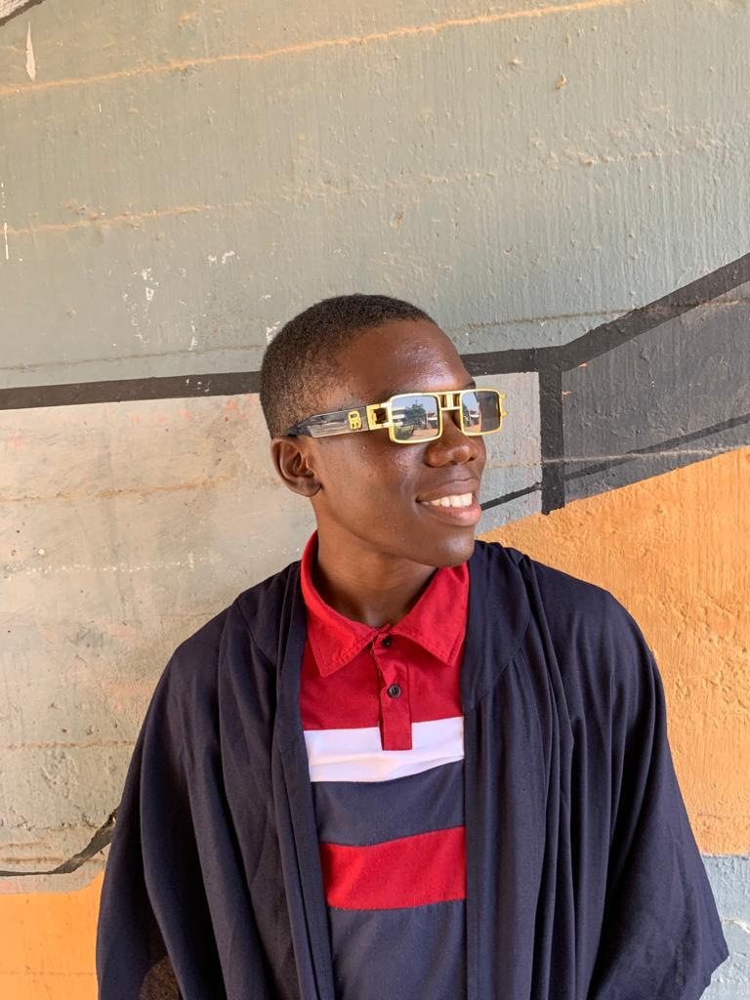

Victor Olabisi is a passionate Nigerian footballer ⚽ and aspiring engineering physicist 🧑🔬 from Ile-Ife, Osun State, Nigeria. He is currently studying Engineering Physics at Obafemi Awolowo University, where he also plays academy football while balancing academics and sports with determination and discipline.From an early age, Victor developed a strong passion for football and has continued to pursue the sport with dedication and ambition. A loyal supporter of Manchester United, he is greatly inspired by football icon Cristiano Ronaldo, whose mentality, consistency, and work ethic continue to motivate his journey both on and off the pitch.Known for his speed, dribbling ability, vision, finishing, and leadership qualities, Victor constantly works to improve his overall game and contribute positively to his team. Through academy football and competitive matches, he continues to gain experience and develop as a promising young talent with dreams of reaching the professional stage.Beyond football, Victor is passionate about science and innovation through Engineering Physics. His long-term goals include playing professional football in Europe, representing Nigeria on the international stage, and contributing to technological advancement through physics and engineering.Driven by discipline, consistency, teamwork, faith, resilience, and self-belief, Victor aims to become not only a successful athlete but also a source of inspiration to young people striving to combine education with sports excellence. 🌍✨